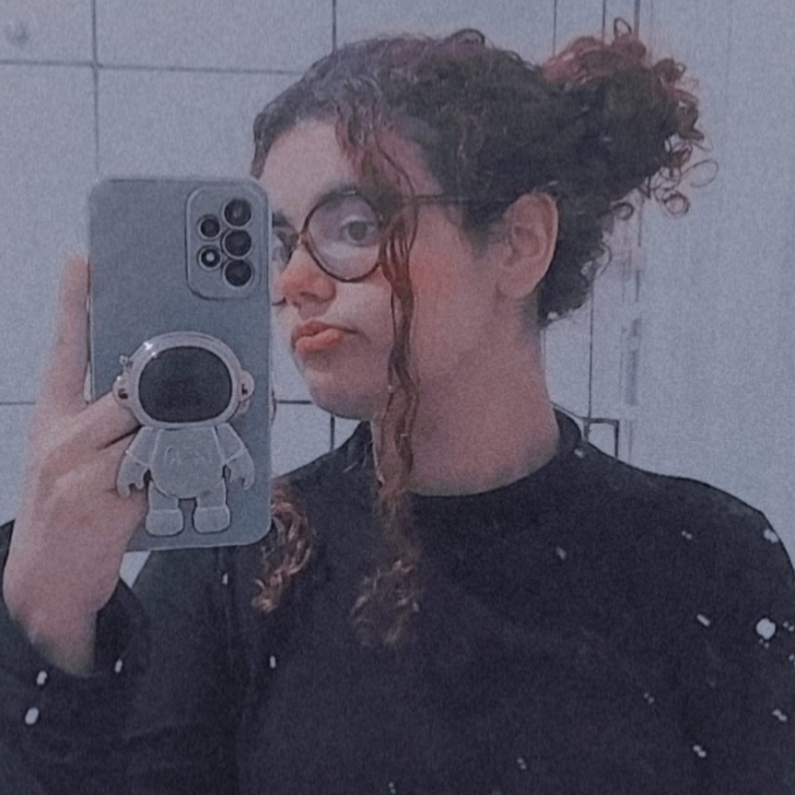
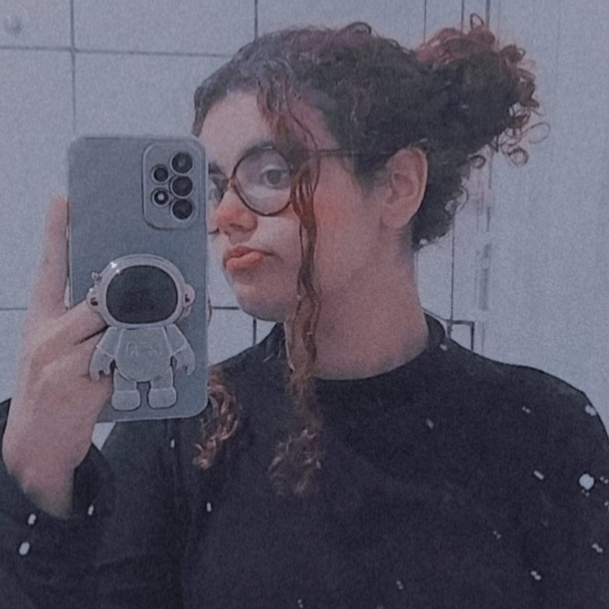

O nosso processo de adentrar na ETEC foi diferente. É provável que todos tenham ficado nervosos ao fazer a prova para passar. Assim como nas outras escolas e salas, o clima é de competitividade e ansiedade. Nossa sala não é diferente, mas ainda assim possuímos uma forte união, companheirismo, coletividade e uma bela amizade.
Nos primeiros dias, fomos além das formalidades e compartilhamos experiências de vida e interesses em comum, tudo para nos aproximarmos mais uns dos outros. Funcionou, já que em poucos dias já construímos uma boa amizade. Não havia espaço para o desconhecido, pois todos estavam abertos a conhecer uns aos outros. Que a lembrança desses dias nos marque, para lembrarmos o quão sortudos fomos por termos nos conhecido.
Ousaria dizer que muitos provavelmente imaginavam a ETEC como um ambiente muito sério e formal. Não vou negar dizendo que não é, mas essa formalidade é quase completamente superada pela coletividade e o apoio existentes entre todos, tanto da sala quanto da escola.